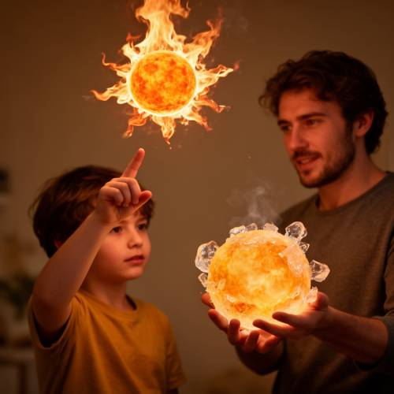
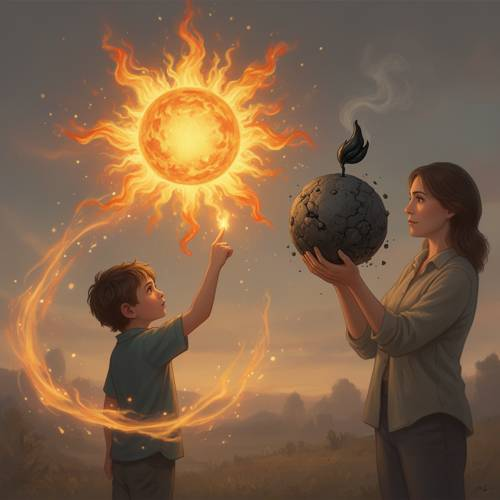

Relationship — A child drew a floating, burning sun in the air with his fingers, whil
A child drew a floating, burning sun in the air with his fingers, while an adult next to him held a cold, extinguished model of the sun.

Direct — one call, no iteration

Continuum — Qwen3.8-27B + FLUX.2-dev
Judge — Direct
FAILRelationship - Comparison — The image depicts a comparison between two sun-like orbs. One is fiery and burning, floating in the air. The other, held by an adult, is covered in ice, representing 'cold'. However, this second orb is glowing brightly from within and is not 'extinguished' as the prompt requires.
PASSAction - Hand (Character/Anthropomorphic) — An adult is shown holding a spherical object with both hands. A child next to him has his right arm raised, pointing his index finger towards a floating orb. The hands of both the child and the adult are depicted with a normal structure and number of fingers.
FAILAction - State — The image shows a sun-like orb that is 'floating' in the air and appears to be 'burning', as it is surrounded by flames. However, the model of the sun held by the adult is glowing, not 'extinguished'.
PASSCompound - Imagination — The image shows a child pointing his finger at a fiery, sun-like orb that is floating unsupported in the air. This combination of elements depicts an event that is impossible in reality, visually representing the child's imaginative act of creating the sun.
Judge — Continuum
PASSRelationship - Comparison — The image displays a clear comparison between two objects. One is a large, bright, fiery sphere resembling a burning sun, floating in the sky. The other is a smaller, dark gray, cracked sphere held by an adult. This second sphere has a wisp of smoke rising from a black, flame-like shape on its top, contrasting with the burning sun and suggesting it is cold or extinguished.
PASSAction - Hand (Character/Anthropomorphic) — The image shows a child with his arm raised, pointing his index finger toward the burning sun. A trail of light appears to connect his finger to the sun. His hand is well-formed. An adult woman stands next to him, holding a spherical object with both hands. Her hands are also correctly depicted.
PASSAction - State — The large, sun-like object is shown floating in the sky. It is depicted as burning, with bright orange and yellow light and flame-like flares. The smaller sphere held by the adult is depicted as extinguished, being dark in color with a wisp of smoke rising from it.
PASSCompound - Imagination — The image visualizes an impossible scenario where a child appears to be drawing or summoning a floating, burning sun in the air with his finger, indicated by the magical trail of light that swirls from his hand towards the sun.
What the agent did
Thinking
Let me carefully parse this prompt: "A child drew a floating, burning sun in the air with his fingers, while an adult next to him held a cold, extinguished model of the sun." So this is a conceptual/creative image: - A child drawing a floating burning sun in the air with his fingers (like drawing in the air, with glowing fire/light following his fingertips) - The sun is floating in the air, burning (flames, glowing) - An adult standing next to him - The adult holds a cold, extinguished model of the sun (like a dark, dull, lifeless sun model — perhaps a dim gray/yellow sphere, no glow, cold appearance, with smoke, or just an extinguished flame lamp, like a deflated/extinguished solar lamp or a dark sun with no fire) So the contrast: the child creates a burning sun with his fingers (creative, magical, alive, hot), the adult holds a dead, cold, extinguished sun model (lifeless, dark, dull). This is a whimsical, conceptual scene. Let me generate it with flux2-dev. Composition ideas: - Indoor or outdoor? Probably an open area — maybe a twilight sky, or a living room? The child is "drawing a floating burning sun in the air with his fingers" — the glowing lines trail from his fingers into a sun shape. That's the magical element. - The adult (father?) is standing next to him, holding an extinguished sun model — like a dark, ashen sun with a small extinguished flame and wisp of smoke, cold, dull gray, perhaps with a metal ring like a sun lamp. Let me write the generation prompt: "A whimsical conceptual scene: a young child standing with fingers raised, drawing a glowing burning sun in the air with his fingertips, trails of orange and yellow fire light following his hand motion forming a radiant sun with flames floating in the air. Next to him, an adult in muted clothes holds up a cold extinguished model of the sun — a dark ashen sphere with a small deflated flame and a thin wisp of smoke, dull gray, lifeless, no glow. Soft ambient light, magical atmosphere, cinematic lighting, high detail." Size: default is 1024x1024. Fine. Then inspect, and mark best as soon as there's a decent result. Main risks: - The burning sun drawn in the air should look like a sun being drawn — glowing strokes. - The adult's extinguished sun model should be clearly cold/dark, in contrast. - The child should look like a child. Let me generate first. Use generate_image with model flux2-dev, no steps/guidance, no seed (policy says don't set a seed). Then inspect the image, and use inspect_region if needed to check details. Let's do it.
Step 1 — `generate_image`
{
"prompt": "Whimsical conceptual illustration: a young child standing with fingers raised, drawing a burning sun in the air with his fingertips \u2014 glowing orange and yellow fire-light trails follow his hand motion, forming a radiant flaming sun floating in the air before him, flames licking at its edges. Next to him, an adult in muted everyday clothes holds up a cold extinguished model of the sun: a dark ashen sphere with a single deflated black flame on top and a thin wisp of gray smoke, dull, lifeless, no glow. Warm magical firelight from the child's sun lighting both figures from the side, soft cinematic atmosphere, high detail, storybook concept-art style.",
"model": "flux2-dev"
}
Result img_0
Thinking
The result is pretty good. Let me evaluate it against the prompt: 1. "A child drew a burning, floating sun in the air with his fingers" — Yes, a boy is reaching up with one finger pointing at a burning sun, and a trail of light is swirling around him. The sun is floating in the air and burning. Good. 2. "An adult next to him is holding a cold, extinguished model of the sun" — Yes, an adult woman is holding a dark, cracked, lifeless sphere with a dead black flame and smoke on top. Good. Details to check: - The child's finger is touching/drawing the sun — there's a spark at the fingertip. Looks like he's drawing it. Good. - The sun is floating in the air — yes. - The extinguished model: a dark cracked sphere with a black flame and smoke — looks like a "cold, extinguished sun model." The cracks might make it look a bit more like a dead planet, but combined with the dead flame on top, it reads as an extinguished sun. No problem. Possible minor flaws: - The trail of swirling light around the child might look a bit random, but it reads as the motion of "drawing in the air." Good. - The adult looks like a woman — "an adult" doesn't specify gender. No problem. - The child's hand: one arm raised, index finger extended, with a spark on the fingertip. Looks natural. Let me zoom in on the child's hand and the extinguished sun to check the details. Actually, the image looks good overall. Let me quickly inspect a couple of regions: the area of the child's hand/finger and the adult's sphere. Actually, the full image looks consistent and high quality. The main risk points: the child's hand (fingers), and whether the "extinguished model" reads as a sun. Let me inspect those two regions.
Model
The first generation is already pretty close to the prompt. Let me zoom in and check the two important details—the child's hand (which should appear to be drawing) and the extinguished sun model.
My crop coordinates were off. Let me verify with better coordinates. The full image is 768x768 (displayed as approximately 768). The child's raised hand is around x=340, y=350. The sun is around (270, 200). The adult's sphere is around (530, 300). Let me re-crop: 1. The child's hand + the sun below it: [180, 100, 480, 450] 2. The adult's sphere + flame: [440, 150, 650, 420] Actually, from the full image: the child is on the left side, arm extended around (345, 350). The sun's center is about (270, 205). The woman's sphere is about (530, 300), with a black flame on top at about (545, 200). Let me crop [150, 80, 470, 450] for the sun + child's hand, and [430, 140, 660, 430] for the sphere.
Model
My crops were offset. Let me re-crop the right areas.
Hmm, the crop seems to be coming back smaller / offset from what I specified. The region [150,80,470,450] returned a 300x450 crop, and the sun is displayed. And [430,140,660,430] is showing the edge of the sun and a rock (part of a sphere) in the bottom right corner. So the sphere is at a more right-downward position than I thought. The coordinates in the image I saw were based on the displayed size of 768, but the actual image is 1024x1024. Let me scale: multiply by 1024/768 = 1.333. So the sphere at display (530, 300) → actual (707, 400). The flame is at display (545, 195) → actual (727, 260). The child's raised hand is at display (345, 350) → actual (460, 467). The center of the sun is at display (270, 205) → actual (360, 273). Let me crop the sphere region: [560, 180, 850, 500] — this should capture the dark sphere, the black flame, and the smoke. And the child's hand: [380, 380, 560, 560].
Model
The image is 1024px, so my display-coordinate estimates were off. Re-cropping with corrected coordinates.
Now I can confirm the details: 1. Extinguished sun model (img_5): a dark, cracked ashen sphere with a black, deflated flame on top and a wisp of gray smoke rising up — it reads very well as a "cold, extinguished model of the sun." 2. The child's hand (img_6): an index finger raised, touching the edge of a sun with a glowing spark at the tip — it reads as "drew/ignited the sun with a finger." Good. The full image is a consistent, high-quality rendering. Both key elements are present: - Child drawing a burning floating sun in the air with a finger ✓ (trails of light swirling around, flames, floating in the air) - Adult standing next to the child holding a cold, extinguished sun model ✓ (dark cracked sphere, dead black flame, smoke, no light) One small consideration: the prompt says "drew... with a finger," and the swirling light trail around the child suggests the motion of drawing. Good. Is there anything wrong? The child's hand — from this angle it looks like an adult's hand, but it's proportionally small and the skin is smooth; within tolerance. The sun is clearly floating in the air. The adult is standing "next to" the child — yes, on the right side. This is a good result. I'll mark it as the best and stop. Good-enough is the stopping condition.
Model
Both of the key details can be confirmed without issue: - **Child's hand**: An index finger raised up, with sparks of light at the fingertip touching the edge of a sun — it reads as a sun drawn/ignited with a finger, and a swirl of flame trails around him suggests the motion of drawing. - **Extinguished model**: A dark, cracked, ashen sphere topped with a black flame that has collapsed, along with a thin wisp of gray smoke, no light — a clear, cold contrast to the burning sun floating nearby. The full image satisfies all the elements of the prompt: a burning sun floating in the air, a child creating it with a finger, and an adult standing beside him holding a cold, extinguished sun model, with warm magical lighting.
Step 8 — `mark_best`
{
"image": "img_0",
"reason": "All prompt elements present and verified at crop level: child drawing a burning floating sun in the air with his fingertip (glowing spark and fire-trail strokes), and an adult beside him holding a cold, extinguished sun model (dark cracked sphere with a deflated black flame and smoke)."
}
Thinking
Marked. The image is complete and matches the prompt. Stopping here.
Model
The image is complete and marked. **Result:** A child stands with his finger raised, drawing a burning sun in the air — a radiant flaming sphere floats before him, its fire-light casting a warm glow, with glowing trails of flame swirling from his hand. Beside him, an adult holds a cold, extinguished model of the sun: a dark, cracked ashen sphere with a deflated black flame on top and a thin wisp of smoke, lifeless and unlit. The contrast between the child's living fire and the adult's dead model carries the whole concept.